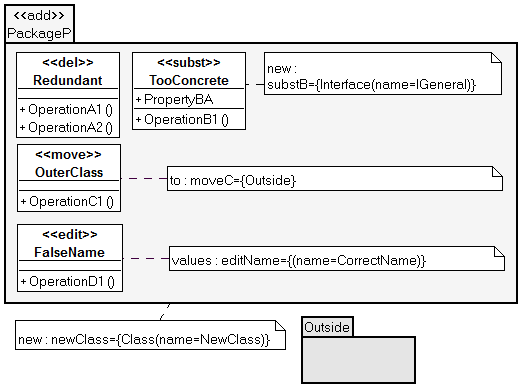
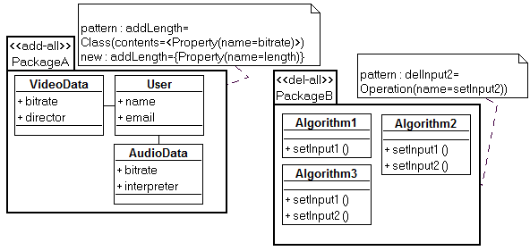
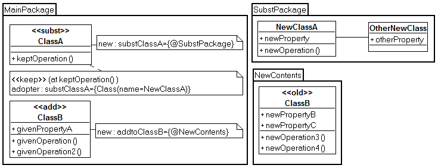

The UMLchange Profile
Content
- Common Properties and Tags
- «del» , «add» and «subst»
- «edit», «move» and «copy»
- «del-all», «add-all» and «subst-all»
- Describing Complex Changes Using «keep» and «old»
- Limitations of the Profile
Figure 1 shows the core elements of the UMLchange profile, i.e. the UMLchange
stereotypes and their properties (also known as tags). The majority of the stereotypes
(excluding « old » and « keep ») describe changes (i.e. the change stereotypes). The
change stereotypes can be applied to any UML model element, as indicated by the extension
relationships targeting meta class Element, the super class of all UML elements.
Change stereotypes extend the abstract stereotype Change, which provides the basic
tags {ref}, {ext} and {constraint}.

Figure 1: The UMLchange profile (core elements)
Figure 2 provides some examples for the usage of UMLchange. Class Redundant will be
deleted. Class TooConcrete is replaced with the Interface IGeneral. A new element
NewClass is inserted into the main package. Furthermore, class OuterClass will be
moved to package Outside and the class FalseName will be renamed to CorrectName.
The components of the profile are described in more detail below.

Figure 2: Examples of Change Stereotypes
Each UMLchange description has the following tags: {ref},{ext} and {constraint}.
To enable the description of multiple independent changes at a model element (e.g. two
independent additions, each adding one operation to a class), each of these tags is multivalued.
Every change has an ID so that it can be referenced by other changes. The tag {ref}
contains the change IDs for each change at the stereotype application. Each application
of a change stereotype must at least have one ID. These IDs should be unique in the
model scope. The change IDs are used in constraints and in change stereotype tags to
relate their entries to the corresponding change. Examples for IDs are deleteTransition, some_Change and add2Operations.
Stereotypes cannot be applied to UML extension elements themselves. {ext} helps to
describe changes of stereotype applications and their tagged values. Its format is
ChangeID = StereotypeName[.TagName]
If a change is directed at a model element, no {ext} entry is necessary. If the change
target is the extension of an element, {ext} follows a convention of most UMLchange
stereotype tag values. Each entry has to be prefixed with the id of the corresponding
change so that entries in the value lists do not need to adhere to a certain order. If the
target is a stereotype application, the name of the applied stereotype must be given. If a
tagged value of a stereotype application is the target of the change, the tag name must
the given in addition to that.
Every change may have constraints attached to it, describing when the change may or
may not take place. The corresponding tag {constraint} has the following format:
ChangeID =AND(OtherChangeID)|NOT(OtherChangeID)|
REQ(OtherChangeID)[, :::]
The obligatory change ID is followed by a constraint that either forces another change
to be simultaneously applied (AND(OtherChangeID)) or excludes a change from being
applied simultaneously (NOT(OtherChangeID)). A change may have more than one
constraint. Each constraint can either be a separate {constraint} entry or in a comma separated
list of constraints as one entry. Contradicting constraints lead to not including
any of the conflicting changes.
The stereotype « del » is used to delete the targeted model element. It recursively deletes
all model elements owned by the targeted element. Any connecting model elements (e.g.
associations) are also deleted to preserve the validity of the model. If the target of « del »
is the multi-valued tagged value of a stereotype application, this stereotype deletes all
values of the tag.
The stereotype « add » serves the purpose of describing additions to model elements.
« add » has to be applied to the elements which will own the new elements. If the target of
« add » is a stereotype application, multi-valued tags receive additional values. Additions
to single-valued tags are treated as substituting the old tagged value with the new value.
Applying « subst » allows to describe the substitution of the targeted model element by
one or more new model elements. The owner of the substitute element or elements is the
parent of the substituted element. By substituting old elements, all of their contained elements
are removed from the model, as well as all connection model elements. To prevent
this from happening, the stereotype « keep » must be applied accordingly (see "Describing Complex Changes Using «keep» and «old»"). If
tagged values are to be substituted, both single and multi-valued tags are completely
substituted by the new values.
To describe the addition of new model elements or the substitution of old elements, the
stereotypes « add » and « subst » use expressions
built with the UMLchange grammar. New elements are described by their metaclass names and pairs of keys and values.
The new elements can be further defined by recursively describing contained elements.
Changes on the grammar level are dependent on each other. Alternatives provide the
ability to describe change variations. The elements described inside these alternatives
are meant to be processed together.
The UMLchange grammar expressions are used in the {new} tag. Its format is
ChangeID = UMLchangeGrammarExpression
For example, to describe the addition of a new class named someClass to
a package, « add » has to be applied to the package. The appropriate {new} entry is
someID = {Class(name = someClass)}
someID is the ID of the corresponding change. The UMLchange grammar is described
in detail in here.
In the example model in Figure 3, a new class named ClassX will be added to the main
package. The class will have a String property named someProperty. The stereotype
« critical » will be removed from ClassA. Finally, the class Real implementing the modelled
interface will be substituted by a class named Independent containing some new void
operation. As old connections are not kept, the new class will not need to implement the
modelled interface.

Figure 3: Adding, Deleting and Substituting Elements
Minor changes can be expressed by applying « edit » to a model element. Its tag {values}
has the format
ChangeID = {(KeyV aluePairs)}[, :::]
KeyValuePairs represents the corresponding subset of the UMLchange grammar. The
keys have to be valid attribute names of the targeted element. An example entry to
change the name of a class to NewName and its visibility to private would be
someID = {(name = NewName, visibility = private)}
As with the description of new model elements, {values} entries can describe alternative
evolutions using the correct syntax. Editing stereotype applications is not possible, as changes would amount to redefining the stereotype instead of its application. Editing
tagged values is analogous to substituting old with new tag values.
For structural changes, « copy » is used to indicate that the targeted model element is
to be duplicated in one or more comma-separated namespaces given in the tag {to}.
«move » works in the same way, but removes the targeted model element from its original
owner and only allows one target namespace. The format of {to} is
ChangeID = QualifiedNamespace[(KeyV aluePairs)][; :::]
The QualifiedNamespace needs to be qualified in so far that the uniqueness of the
namespace in the model is guaranteed. The copied or moved model element in the
target namespace can then be modified with KeyValuePairs using the same format as in
the {values} tag of « edit ». Multiple destination namespaces must be comma-separated.
An example for an entry in {to} is
copySomething = {mainPackage :: SubPackage(name = NewName),
mainPackage :: SubP ackage(name = OtherNewName)}
This describes two copies of the targeted model element to the same SubPackage, renaming
each one in the process. For obvious reasons it is not allowed to copy a model
element to the same namespace as the source element without changing the name of
the copied element.
If a stereotype application is the target, all of its tagged values are also copied to the
targeted element. If the targeted element already has the stereotype applied to it, all
tagged values are replaced in the process. It is not allowed to change the name of the
stereotype, as this would change the applied stereotype itself.
In the example model (see Figure 4), class ClassE has « critical » applied to it. « edit »
is applied to change the value of {high} to only contain operationA. ClassM is moved
alternatively to either package TargetP or TargetP2. Finally, ClassC is copied to both
TargetP and TargetP2.

Figure 4: Editing, Moving and Copying Elements
These three stereotypes allow to describe changes to multiple model elements. They are
applied to the namespace in which the changes are to take place. Apart from the {new}
tag, which works the same way as with the namesakes of the stereotypes, the {pattern}
tag allows to identify the model elements in the namespace affected by the described
change. The format of {pattern} is
ChangeID = TargetedElementsPattern
After the change ID, the TargetedElementsPattern uses the same syntax as the Simple
Element Descriptions. First the metaclass of the targeted elements must be given. For
example, if the given metaclass is Class, then the changes would affect all classes in the
namespace marked with the *all-Stereotype. Following the metaclass, the affected elements
can be further filtered by giving key value pairs defining certain attributes that the
affected elements must possess. For example, to affect all dependencies having a certain
supplier, the entry would be Dependency(supplier=somePackage::certainSupplier).
Some further examples for entries in {pattern} are
- Dependency(supplier=somePackage::certainSupplier, contents=<Stereotype(name=secrecy)>)
– all dependencies that have the supplier somePackage::certainSupplier and the
stereotype application of « secrecy »
- Class(visibility=private,contents=<Operation(name=getInformation)>)
– all private Classes having an operation named getInformation
- Action(contents=<Stereotype>)
– all stereotyped actions
In the example model (see Figure 5), all classes in package PackageA with the property
bitrate will receive a new property named length. Furthermore, all operations named
setInput2 in PackageB will be removed from their respective classes.

Figure 5: Changing Element Sets with Patterns
The UMLchange profile provides additional stereotypes used for specific marking of
model elements (marking stereotypes). « keep » is used to mark model elements that
would otherwise be removed in the process of substituting a model element. Its tag
{adopter} has the format
ChangeID = {AdoptingElementDescription}[, :::]
As different alternatives in changes may describe different new elements, it is necessary
to give the number of the alternative in question. Then, the AdoptingElementDescription
uses the same syntax as the simple element descriptions (see Section 2.2). For example,
let « subst » be applied to a class. Its {new} entry is
substClass = {@newElements}, {@otherVersion)}
This means that the old class is either substituted by two new classes or alternatively by
another class. To keep some old contained element of the old class, it has to be marked
with « keep ». If an old element should be adopted by the class NewClass when using
the first alternative, the appropriate entry for {adopter} is
substClass = {}, {Class(name = NewClass)}
Describing complex changes with the UMLchange grammar can lead to long-winded
grammar expressions. To provide a simpler method for modelling complex changes,
UMLchange provides the ability to reference changes modelled in a namespace in the
original model. The namespace containing the new model elements can be placed anywhere
in the model.
To connect the new model elements to the correct owner in the original model, the owner
relation has to be modelled in the namespace by modelling the owners of the new elements.
However, it is not necessary to completely re-model the owning elements. For
example, one would not need to re-model a class with all of its operations and attributes
to model two new operations for it. Instead it is sufficient to just model the owning class
and its name, as long as the class can be uniquely identified within the original model. To
support this method, « old » is used to mark those incompletely modelled references to
the original model.
In the example model (see Figure 6), ClassA will be substituted by two new classes,
NewClassA and OtherNewClass. The old operation keptOperation will be adopted by
NewClassA. In addition to that, several new attributes and operations will be added to
ClassB, as modelled in the namespace NewContents.

Figure 6: Describing Complex Changes with Namespaces
There are some limitations to UMLchange.
For example, association ends cannot be changed because there is no simple method for identifying
the source or target of an association.
The behavior of nested UMLchange applications has not been defined. As long as changes are constrained by
using REQ constraints, behavior can be determined. Without these constraints, it cannot be ensured whether both
changes can be applied.